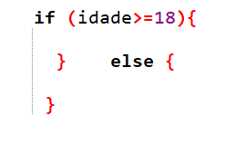
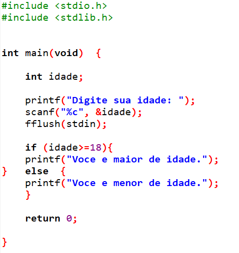
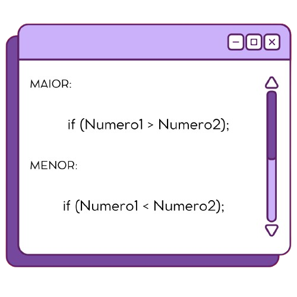
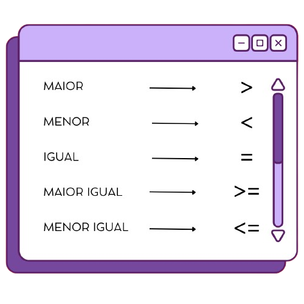

DEFINIÇÕES:
A estrutura if-else-if também, conhecida como operação de decisão, é utilizada para tomada de rumo no programa.
- IF: A condição é avaliada e, se for verdadeira, o código dentro das chaves é executado.
- ELSE IF: A condição é avaliada e, se for verdadeira, o código é executado.
- ELSE: Se nenhuma das condições anteriores for verdadeira, o código dentro do else é executado.
EXEMPLO:
O programa solicita sua idade, caso você seja maior de idade (18 anos), irá imprimir maior de idade, se não irá imprimir menor de idade.
Utilizaremos como base um código que fizemos anteriormente em variáveis que pode ser visto na imagem abaixo.

Nele, após o " fflush(stdin); ", escrevemos:
E dentro dos colchetes adicionamos o código de imprimir, e escrevemos maior de idade, seguido, menor de idade. Ficando da seguinte forma:
OBSERVAÇÕES:
Como posso dizer que um número é maior/menor que o outro?
 